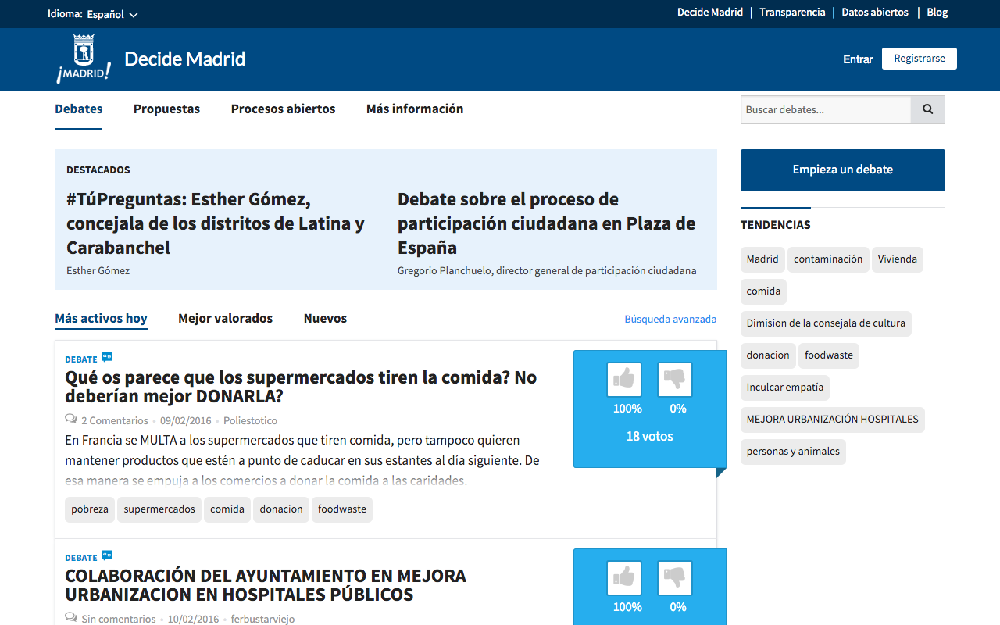
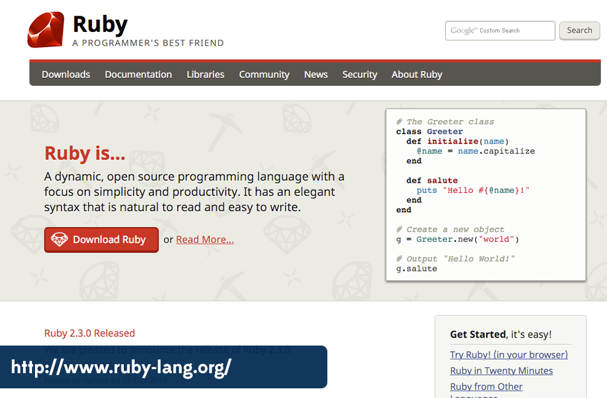
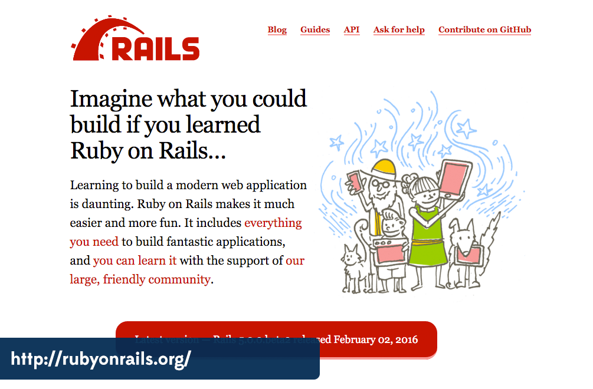
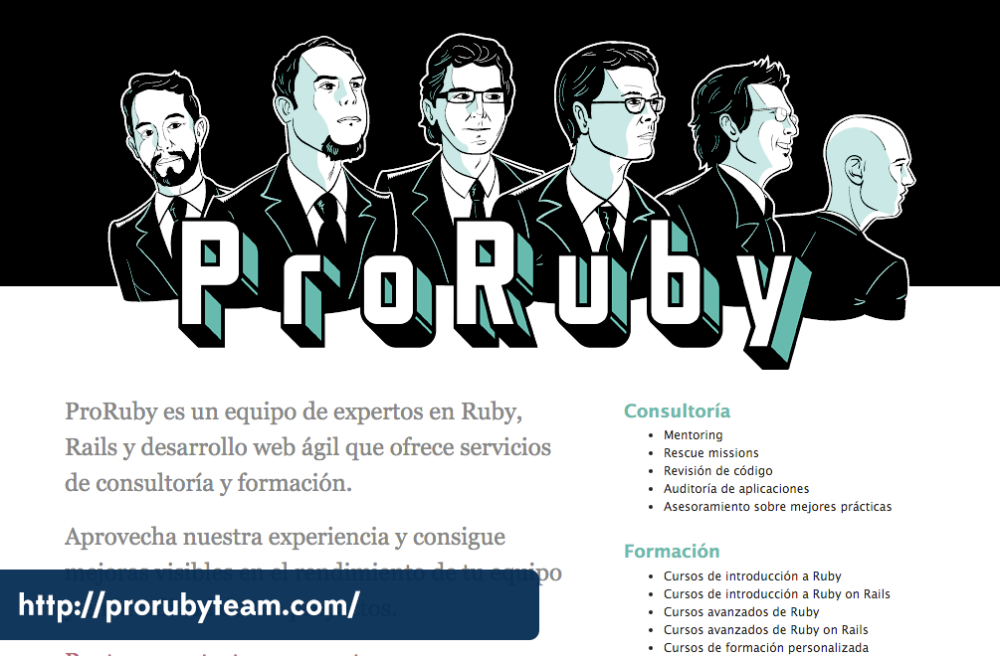
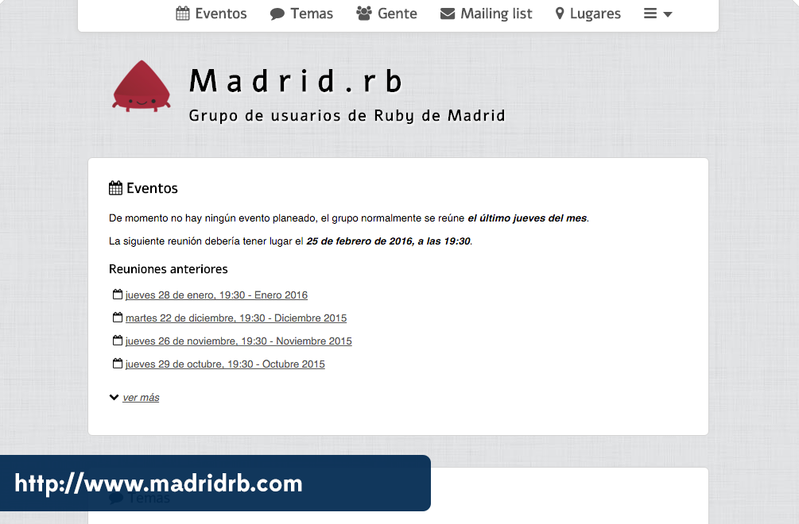
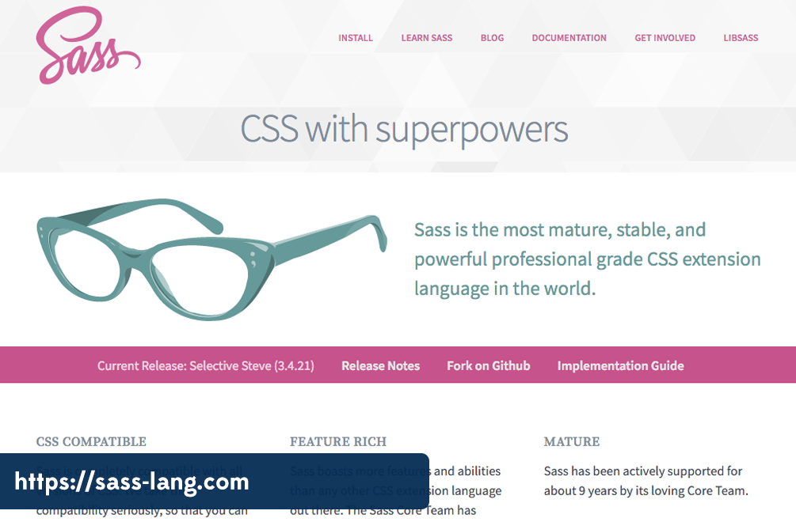

<!doctype html>
<html lang="en">

  <head>
    <meta charset="utf-8">

    <title>Hacking Madrid</title>

    <meta name="description" content="Hacking Madrid">
    <meta name="author" content="Enrique García Cota">

    <meta name="apple-mobile-web-app-capable" content="yes" />
    <meta name="apple-mobile-web-app-status-bar-style" content="black-translucent" />

    <meta name="viewport" content="width=device-width, initial-scale=1.0, maximum-scale=1.0, user-scalable=no, minimal-ui">

    <link rel="stylesheet" href="css/reveal.css">
    <link rel="stylesheet" href="css/theme/kikito.css" id="theme">

    <!-- Code syntax highlighting -->
    <link rel="stylesheet" href="lib/css/vs.css">


    <!-- Printing and PDF exports -->
    <script>
      var link = document.createElement( 'link' );
      link.rel = 'stylesheet';
      link.type = 'text/css';
      link.href = window.location.search.match( /print-pdf/gi ) ? 'css/print/pdf.css' : 'css/print/paper.css';
      document.getElementsByTagName( 'head' )[0].appendChild( link );
    </script>

    <!--[if lt IE 9]>
    <script src="lib/js/html5shiv.js"></script>
    <![endif]-->
  </head>

  <body>

    <div class="reveal">

      <!-- Any section element inside of this container is displayed as a slide -->
      <div class="slides">

        <section data-markdown data-separator="\*\*\*">
          <script type="text/template">

<!-- .slide: data-background="./img/ayto1.jpg" -->
## Hacking Madrid
##### Guía de Supervivencia para hacer open source en una administración pública

<div class="subtitle">
<p>Rai García ([@voodoorai2000](http://twitter.com/voodoorai2000)). t3chfest </p>
<p><small>Except where otherwise noted, this work is licensed under: http://creativecommons.org/licenses/by-nc-sa/3.0/ </small></p>

</div>

***

<!-- .slide: data-background="#008AB8" -->

## I. Madrid Decide
## II. OSS + Ayto
## III. Agilidad
## IV. Conclusion

***

# I. Madrid Decide

***
<!-- .slide: data-background="#9BC53D" -->

### http://decide.madrid.es

***
<!-- .slide: data-background="./img/la_ciudad_que_quieres.jpg" -->

***
<!-- .slide: data-background="./img/pablo_soto.jpg" -->

***
<!-- .slide: data-background="./img/timeline.jpg" -->
### Timeline
***

<figure class="stretch">
  
</figure>

***
<!-- .slide: data-background="./img/back_to_the_future.jpg" -->

<figure class="stretch">
  
</figure>

***
<!-- .slide: data-background="./img/forocoches_bg.jpg" -->

<figure class="stretch">
  
</figure>

***

<figure class="stretch">
  
</figure>

***

<figure class="stretch">
  
</figure>

***
<!-- .slide: data-background="./img/plaza_espana.png" -->

***
<!-- .slide: data-background="./img/hackers.jpg" -->

***
<!-- .slide: data-background="./img/presupuestos.jpg" -->

## Presupuestos participativos

***

<figure class="stretch">
  
</figure>

***
<!-- .slide: data-background="./img/open-source.jpg" -->

# II. OSS + Ayto

***

https://github.com/AyuntamientoMadrid/consul

***

https://github.com/consul/consul

***

https://github.com/AjuntamentdeBarcelona/decidim.barcelona

***

<figure class="stretch">
  
</figure>

***
<!-- .slide: data-background="./img/contributors.jpg" -->

***

<figure class="stretch">
  
</figure>

***

<figure class="stretch">
  
</figure>

***

<figure class="stretch">
  
</figure>

***
<!-- .slide: data-background="./img/coding_madrid.jpg" -->
## #CodingMadrid

***
<!-- .slide: data-background="./img/agile.jpg" -->

# III. Agilidad

***

<figure class="stretch">
  
</figure>

***

<!-- .slide: data-background="#9BC53D" -->

> Make programmers happy

***

``` ruby
10.times { print "Hello" }
```

***

<figure class="stretch">
  
</figure>

***

<!-- .slide: data-background="#9BC53D" -->

> Convention over configuration

***

``` txt
.
├── app/
│   ├── assets/
│   ├── controllers/
│   ├── helpers/
│   ├── models/
│   └── views/
├── config/
├── db/
└── public/

```
***

### [@voodoorai2000](http://twitter.com/voodoorai2000) & [@xuanxu](http://twitter.com/xuanxu)


***

<figure class="stretch">
  
</figure>

***

### [@otikik](http://twitter.com/otikik)
<figure class="stretch">
  
</figure>

***

<figure class="stretch">
  
</figure>

***

### [@decabeza](http://twitter.com/decabeza)
<figure class="stretch">
  
</figure>

***

<figure class="stretch">
  
</figure>

***

<!-- .slide: data-background="#9BC53D" -->

## YAGNI

> "You ain't gonna need it"

***

## Creativity

***

<figure class="stretch">
  
</figure>

***

#### [John Cleese - How To Be Creative](https://www.youtube.com/watch?v=PQ0lck7oo4A)
<figure class="stretch">
  <a href="https://www.youtube.com/watch?v=PQ0lck7oo4A"></a>
</figure>

***

<!-- .slide: data-background="#9BC53D" -->

> Open mode for creativity, closed mode for execution

***

# IV. Conclusión

***
<!-- .slide: data-background="./img/work.jpg" -->

## Mucho trabajo por hacer

***

<!-- .slide: data-background="./img/questions.jpg" -->

# ¿Preguntas?

***

<!-- .slide: data-background="./img/thank-you.jpg" -->

          </script>
        </section>
      </div>

    </div>

    <script src="lib/js/head.min.js"></script>
    <script src="js/reveal.js"></script>

    <script>

      // Full list of configuration options available at:
      // https://github.com/hakimel/reveal.js#configuration
      Reveal.initialize({
        controls: true,
        progress: true,
        history: true,

        width: 960,
        height: 700,

        margin: 0.1,

        // Bounds for smallest/largest possible scale to apply to content
        minScale: 0.2,
        maxScale: 1,

        center: true,

        theme: 'kikito',
        transition: 'fade', // default/cube/page/concave/zoom/linear/fade/none
        transitionSpeed: 'fast',

        // Optional reveal.js plugins
        dependencies: [
          { src: 'lib/js/classList.js', condition: function() { return !document.body.classList; } },
          { src: 'plugin/markdown/marked.js', condition: function() { return !!document.querySelector( '[data-markdown]' ); } },
          { src: 'plugin/markdown/markdown.js', condition: function() { return !!document.querySelector( '[data-markdown]' ); } },
          { src: 'plugin/highlight/highlight.js', async: true, condition: function() { return true; }, callback: function() { hljs.initHighlightingOnLoad(); } },
          { src: 'plugin/zoom-js/zoom.js', async: true },
          { src: 'plugin/notes/notes.js', async: true }
        ]
      });

    </script>

  </body>
</html>
